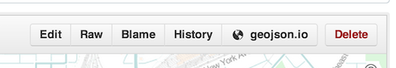

Geospatial Github
Christopher Helm
@cwhelm
Esri DC Dev Center
Exploring github & geo
Github is pretty nice
Social Coding & Collaboration
Low barrier
Where the community is
Github ~ Development
Part of daily life
https://status.github.com/
Esri on Github
More open, More Efficient
"Everything that can be open, should be open" - Scott Morehouse
Repos are ideas
Exploring through code
some work ... many don't
My Github Account
https://github.com/chelm
( ~50% total crap )
Github Resumes
http://resume.github.io
pramsey
jatorre
tschaub
chelm
Open Source Report Cards
http://osrc.dfm.io
pramsey
jatorre
tschaub
chelm
June 2013
Github & GeoJSON
Lots of cool uses!
Of course...
Rate limits
Size restrictions
( its really a toy )
but what if...
could github be a geospatial platform?
Open Data!
dwillis/nyc-maps
benbalter/dc-maps
Exploring a geospatial github
Grunt-Geo by chelm
A grunt plugin to find the geographic center of a git repo
Leaflet
Backbone
chelm/geohub
Extract geojson from Github
var Geohub = require('geohub');
Geohub.gist( id, callback );
Geohub.repo( user, repo, filepath, callback );
Esri/koop

Esri/koop
Geospatial filter and queries
dynamic data caching
3rd party API adapters
Esri/koop
https://koop.dc.esri.com
Git Spatial
http://gitspatial.com/
esri2open
toolbox for exporting data from ArcMap defaults to geojson
esri2open (to gist)
to
Gists also give love to geojson!
Looking for a QGIS to Gist?
mapbox/geojson.io FTW!
CRUD, saves to gists
extension too? 
tschaub/mapjack
chelm/geohub
Extract geojson from Github
var Geohub = require('geohub');
Geohub.gist( id, callback );
Geohub.repo( user, repo, filepath, callback );